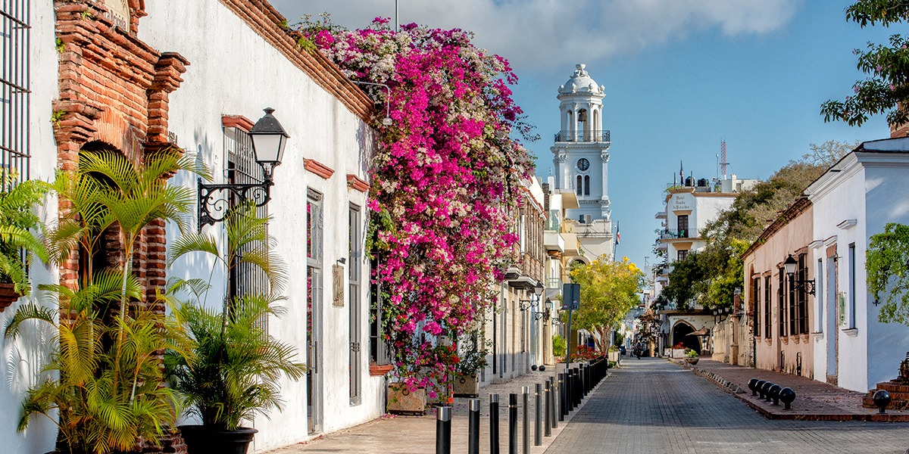
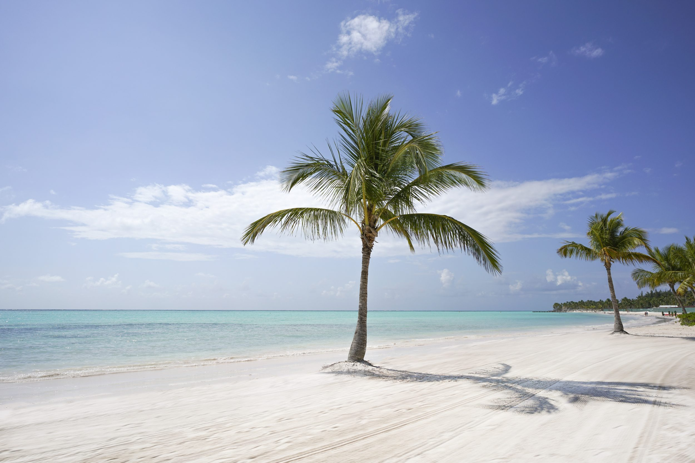
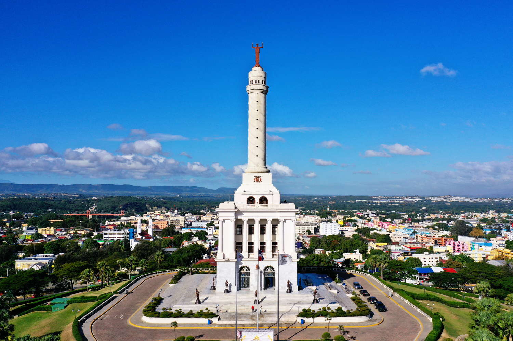
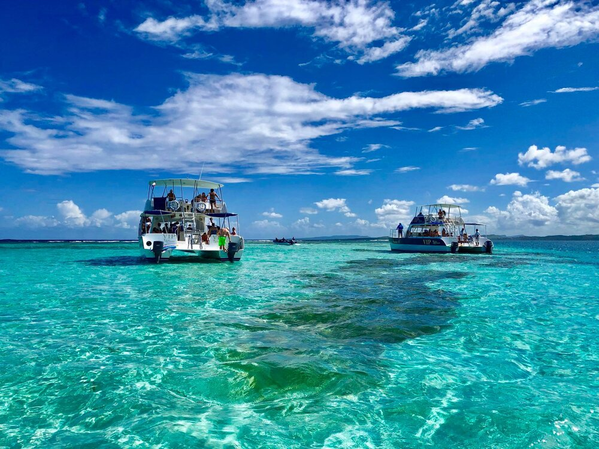

Santo Domingo is the capital of the Dominican
Republic and one of the Caribbean's oldest cities.
Its walled, cobblestoned historic core, the Zona Colonial, has buildings that date to the 1500s, including
the cathedral, which was the first built in the New World.

Punta Cana, the easternmost tip of the Dominican
Republic, abuts the Caribbean Sea and the Atlantic Ocean.
It's a region known for its 32km stretch of beaches and clear waters. The Bávaro area and Punta Cana combine to
form what's known as La Costa del Coco, or the
Coconut Coast, an area of lavish, all-inclusive resorts.

Santiago de los Caballeros is a city in the north of
the Dominican Republic. On a hilltop,
the 1944 Monumento de Santiago, topped by a white column, is dedicated to the heroes of the Dominican Restoration
War.

San Felipe de Puerto Plata is the capital of the
Puerto Plata province on the Dominican Republic’s
Atlantic north coast. The city is best known for its beaches.